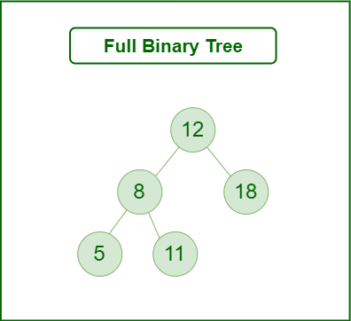
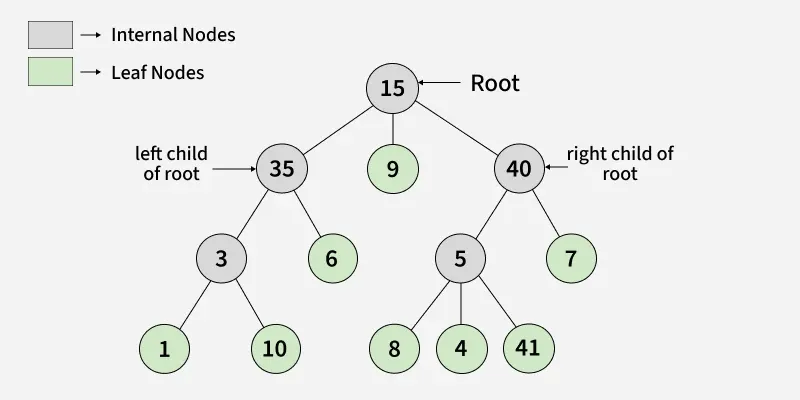
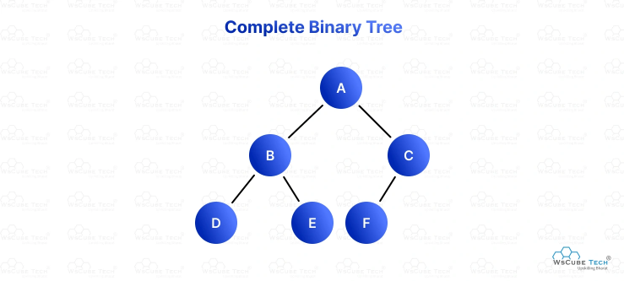
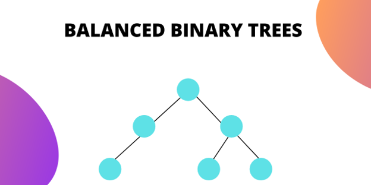
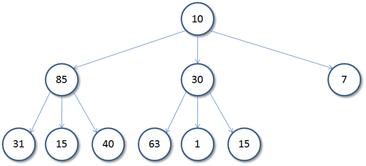
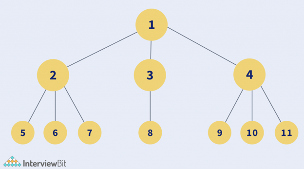

Full Binary Tree
Every node has either 0 or 2 children.

NON-LINEAR DATA STRUCTURE
Learn how trees organize data into parent–child relationships, how the basic terminology works, and how a Binary Search Tree performs its core operations.
A tree is a hierarchical data structure used to organize and represent data in a parent–child relationship. It consists of nodes, where the topmost node is called the root, and every other node can have one or more child nodes.

Data in a tree is not stored sequentially, i.e. not in a linear order. Instead, it is organized across multiple levels, forming a hierarchical structure. Because of this arrangement, a tree is classified as a non-linear data structure.
Tree data structures can be classified based on the number of children each node can have.
Each node can have a maximum of two children.
Every node has either 0 or 2 children.

All levels are fully filled except possibly the last, which is filled from left to right.

The height difference between the left and right subtrees of every node is minimal.

Each node can have at most three children, often labeled as left, middle, and right.


INTERACTIVE LEARNING
Insert, search for, and delete values to see how a Binary Search Tree keeps every left child smaller and every right child larger than its parent, then run a traversal to watch how each strategy visits the nodes.
Select an operation to interact with the tree.
Folders and files are organized as a tree, with each folder able to contain subfolders and files.
Every HTML page is parsed into a tree of elements, starting from a single root node.
Decision trees branch through a series of choices to reach an outcome, as used in games and machine learning.